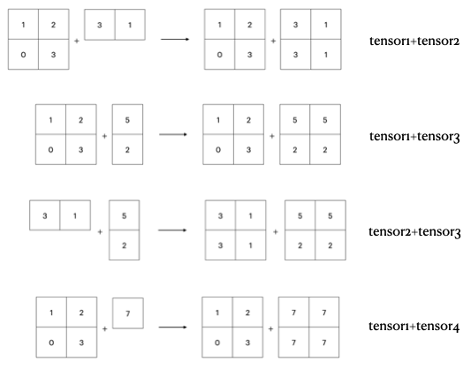

import torchWhat are Tensors
Tensors are a specialized data structure that are very similar to arrays and matrices. In PyTorch, we use tensors to encode the inputs and outputs of model, as well as the model’s parameters. Tensors are similar to NumPy’s arrays, expect that tensors can run on GPU or other hardware.
Import torch
Creating Tensors
Ways to create a tensor.
Factory Method
Creating an empty tensor. torch.empty()
# creating a tensor with 2-dimensions, 3 rows and 4 columns.
x = torch.empty(3,4)
# by default tenors are 32-bit gloating point numbers.
# torch.empty() allocates memory for the tensor but does not initialize it with any values
print(x)tensor([[0.0000e+00, 0.0000e+00, 7.7052e+31, 7.2148e+22],
[1.5766e-19, 1.0256e-08, 1.6802e-04, 3.1645e+12],
[2.7095e-09, 1.0504e-05, 1.0860e-05, 1.2398e+16]])Creating a tensor full of zeros. torch.zeros()
# creating a tensor with 2-dimensions, 2 rows and 3 columns.
x = torch.zeros(2,3)
print(x)tensor([[0., 0., 0.],
[0., 0., 0.]])Creating a tensor full of ones. torch.ones()
# creating a tensor with 2-dimensions, 3 rows and 1 column.
x = torch.ones(3,1)
print(x)tensor([[1.],
[1.],
[1.]])Creating a tenor full of random values. torch.rand()
torch.manual_seed(187)
# creating a tensor with 2-dimension, 2 rows and 3 columns.
random = torch.rand(2,3)
print(random)tensor([[0.5305, 0.9925, 0.7754],
[0.9989, 0.3047, 0.9887]])Creating a tensor with specific data directly
torch.tensor() is the way to create a tenors if you have a Python tuple or list. Is creates a copy of the data as tensor.
x = torch.tensor(([1,2,3],[4,5,6]))
print(x.shape)
print(x)torch.Size([2, 3])
tensor([[1, 2, 3],
[4, 5, 6]])Random tensor and seeding
torch.manual_seed() sets the random seed to fixes the random outputs.
torch.rand() creates a random tensor.
torch.manual_seed(187)
random = torch.rand(5,5)
print(random)tensor([[0.5305, 0.9925, 0.7754, 0.9989, 0.3047],
[0.9887, 0.3299, 0.2694, 0.5281, 0.8815],
[0.5275, 0.7802, 0.9964, 0.1060, 0.5047],
[0.6960, 0.1014, 0.8651, 0.9504, 0.7015],
[0.2917, 0.7787, 0.3808, 0.2624, 0.6519]])Creating tensor with the shape like
Creating a tensor having the same number dimensions and the same number of cells in each dimension. - torch.empty_like() - torch.zeros_like() - torch.ones_like() - torch.rand_like()
x = torch.empty(2,2,3)
print(x)
zeros_like_x = torch.zeros_like(x)
print(zeros_like_x)tensor([[[5.5265e-36, 0.0000e+00, 5.5271e-36],
[0.0000e+00, 1.5766e-19, 1.0256e-08]],
[[1.6802e-04, 3.1645e+12, 2.7095e-09],
[1.0504e-05, 1.0860e-05, 1.2398e+16]]])
tensor([[[0., 0., 0.],
[0., 0., 0.]],
[[0., 0., 0.],
[0., 0., 0.]]])Terminology about tensors and thier number of dimensions
- 0-dimensional tensor is called a scalar
- 1-dimensional tensor is called a vector
- 2-dimensional tensor is called a matrix
- 3-dimensional or more tensor is called a tensor
d0 = torch.ones(1)
print('scalar (0-dim)')
print(d0)
print('\n')
d1 = torch.ones(1,4)
print('vector 1-dim')
print(d1)
print('\n')
d2 = torch.ones(3,3)
print('matrix 2-dim')
print(d2)
print('\n')
d3 = torch.ones(4,4,4)
print('tensor 3-dim or more')
print(d3)scalar (0-dim)
tensor([1.])
vector 1-dim
tensor([[1., 1., 1., 1.]])
matrix 2-dim
tensor([[1., 1., 1.],
[1., 1., 1.],
[1., 1., 1.]])
tensor 3-dim or more
tensor([[[1., 1., 1., 1.],
[1., 1., 1., 1.],
[1., 1., 1., 1.],
[1., 1., 1., 1.]],
[[1., 1., 1., 1.],
[1., 1., 1., 1.],
[1., 1., 1., 1.],
[1., 1., 1., 1.]],
[[1., 1., 1., 1.],
[1., 1., 1., 1.],
[1., 1., 1., 1.],
[1., 1., 1., 1.]],
[[1., 1., 1., 1.],
[1., 1., 1., 1.],
[1., 1., 1., 1.],
[1., 1., 1., 1.]]]).shape property gives list of the extant of each dimension
x = torch.zeros(2,1)
x.shapetorch.Size([2, 1])Tensor data types
One way to set the data type of a tensor is with an optional argument at creation.
You can see the specified dtype by printing the tensor.
a = torch.ones((2,3), dtype=torch.int16)
print(a)tensor([[1, 1, 1],
[1, 1, 1]], dtype=torch.int16)Another way to set the datatype is with the .to() method. It converts a float64 and creates a int32 tensor.
a = torch.ones((2,3), dtype=torch.float64)
print(a)
b = a.to(torch.int32)
print(b)tensor([[1., 1., 1.],
[1., 1., 1.]], dtype=torch.float64)
tensor([[1, 1, 1],
[1, 1, 1]], dtype=torch.int32)PyTorch datatypes:
- torch.bool
- torch.int8
- torch.uint8
- torch.int16
- torch.int32
- torch.int64
- torch.half
- torch.float
- torch.double
- torch.bfloat
Math & Logic
Basic arithmetic with tensors.
twos = torch.ones(2,2) * 2
print(twos)tensor([[2., 2.],
[2., 2.]])Arithmetic operations between tensors and scalars, such as addition, subtraction, multiplication, division, and exponentiation are distributed over every element of the tensor.
Operation between tow tensors also behave intuitively:
ones = torch.ones(2,2)
print(ones + twos)tensor([[3., 3.],
[3., 3.]])Tensors of dissimilar shape will throw a run-time error when calculated via binary operation.
# The following throws a run-time error. This is intentional.
a = torch.rand(2,3)
b = torch.rand(3,4)
print(a * b)RuntimeError: The size of tensor a (3) must match the size of tensor b (4) at non-singleton dimension 1More math-operations:
Tensor Broadcasting
The exception to the same-shape rule is tensor broadcasting.
rand = torch.rand(2,4)
doubled = rand * (torch.ones(1,4)*2)
print(rand)
print(doubled)tensor([[0.6098, 0.3175, 0.3386, 0.4934],
[0.9187, 0.8510, 0.7339, 0.3254]])
tensor([[1.2195, 0.6349, 0.6772, 0.9867],
[1.8375, 1.7020, 1.4677, 0.6508]])How is it we get to multiply a 2x4 tensor by a 1x4 tensor?
Broadcasting is a way to perform an operation between tensors that have similarities in their shapes. In the example above, the one-row, four-column tensor is multiplied by both rows of the two-row, four-column tensor.
broadcasting examples:

This is an important operation in Deep Learning. The common example is multiplying a tensor of learning weights by a batch of input tensors, applying the operation to each instance in the batch separately, and returning a tensor of identical shape - just like (2,4) * (1,4) example above returned a tensor of shape (2,4).
The rules of broadcasting are:
- Each tensor must have at least one dimension - no empty tensors.
- Comparing the dimension sizes of the two tensors, going form last to first:
- Each dimension must be equal of
- One of the dimension must be of size 1, or
- Dimension does not exist in one of the tensors
Tensors of identical shape, of course are trivially “broadcastable”, as you saw earlier.
Here are some examples of situation that honor the above rules and allow broadcasting:
a = torch.ones(4,3,2)
print(a)tensor([[[1., 1.],
[1., 1.],
[1., 1.]],
[[1., 1.],
[1., 1.],
[1., 1.]],
[[1., 1.],
[1., 1.],
[1., 1.]],
[[1., 1.],
[1., 1.],
[1., 1.]]])b = a * torch.rand(3,2) # 3rd & 2nd dims identical to a, dim 1 absent
print(b)tensor([[[0.6381, 0.9161],
[0.5682, 0.7014],
[0.7000, 0.8772]],
[[0.6381, 0.9161],
[0.5682, 0.7014],
[0.7000, 0.8772]],
[[0.6381, 0.9161],
[0.5682, 0.7014],
[0.7000, 0.8772]],
[[0.6381, 0.9161],
[0.5682, 0.7014],
[0.7000, 0.8772]]])d = a * torch.rand(1,2) # 3rd dim identical to a, 2nd dim = 1
print(d)tensor([[[0.6071, 0.9969],
[0.6071, 0.9969],
[0.6071, 0.9969]],
[[0.6071, 0.9969],
[0.6071, 0.9969],
[0.6071, 0.9969]],
[[0.6071, 0.9969],
[0.6071, 0.9969],
[0.6071, 0.9969]],
[[0.6071, 0.9969],
[0.6071, 0.9969],
[0.6071, 0.9969]]])a = torch.ones( 4, 3, 2)
b = a * torch.rand( 4, 3) # dimension must match last-to-first
c = a * torch.rand( 2, 3) # both 3rd & 2nd dims different
d = a * torch.rand(0,) # cant broadcast with an empty tensorRuntimeError: The size of tensor a (2) must match the size of tensor b (3) at non-singleton dimension 2Altering Tensors in Place
Most binary operations on tensors will return a third, new tensor. When we say c = a * b (where a and b are tensors), the new tensor c will occupy a region of memory distinct from the other tensors.
There are times, though, that you may whish to alter a tensor in place - for example. if you’re doing an element-wise computation where you can discard intermediate value. For this, most of the math function have a version with an underscore(_) that will alter a tensor in place.
a = torch.tensor([0, math.pi / 4, math.pi / 2, 3 * math.pi / 4])
print('a:')
print(a)
print(torch.sin(a)) # this operation creates a new tensor in memory
print(a) # a has not changed
b = torch.tensor([0, math.pi / 4, math.pi / 2, 3 * math.pi / 4])
print('\nb:')
print(b)
print(torch.sin_(b)) # note the underscore
print(b) # b has changeda:
tensor([0.0000, 0.7854, 1.5708, 2.3562])
tensor([0.0000, 0.7071, 1.0000, 0.7071])
tensor([0.0000, 0.7854, 1.5708, 2.3562])
b:
tensor([0.0000, 0.7854, 1.5708, 2.3562])
tensor([0.0000, 0.7071, 1.0000, 0.7071])
tensor([0.0000, 0.7071, 1.0000, 0.7071])For arithmetic operations, here are function that behave similar:
a = torch.ones(2,2)
b = torch.rand(2,2)
print('Before: ')
print(a)
print(b)
print('\nAfter adding:')
print(a.add_(b))
print(a)
print(b)
print('\nAfter multiplying')
print(b.mul_(b))
print(b)Before:
tensor([[1., 1.],
[1., 1.]])
tensor([[0.4583, 0.6130],
[0.6209, 0.9512]])
After adding:
tensor([[1.4583, 1.6130],
[1.6209, 1.9512]])
tensor([[1.4583, 1.6130],
[1.6209, 1.9512]])
tensor([[0.4583, 0.6130],
[0.6209, 0.9512]])
After multiplying
tensor([[0.2100, 0.3757],
[0.3856, 0.9048]])
tensor([[0.2100, 0.3757],
[0.3856, 0.9048]])Note that these in-place arithmetic functions are methods an the torch.Tensor object, not attached to the torch module like many other functions (e.g. torch.sin()). As you can see from a.add_(b), the calling tensor is the one that gets changed in place.
Copying Tensors
As with any object in Python, assigning a tensor to a variable makes the variable a label of the tensor, and does not copy it. For example.
a = torch.ones(2,2)
b = a
a[0][1] = 561 # we change a ...
print(b) # and b is also alteredtensor([[ 1., 561.],
[ 1., 1.]])But what is if you want a separated copy of the data to work on? The clone() method is there for you:
a = torch.ones(2,2)
b = a.clone()
assert b is not a # differen objects in memory ...
print(torch.eq(a,b)) # ... but still with the same contents
a[0][1] = 561
print(b)tensor([[True, True],
[True, True]])
tensor([[1., 1.],
[1., 1.]])There is an important thing to be aware of when using clone(). If your source tensor has autograd enabled then so will the clone. This will be covered more deeply in the video on autograd, but if you want the light version of the details, continue on.
Moving to GPU
To check whether a GPU is available we can use torch.cuda.is_available()
if torch.cuda.is_available():
print('We have GPU!')
else:
print('Sorry, CPU only')We have GPU!By default new tensors are created on the CPU. You have to specify an optional device argument to use the tensor on a GPU.
As an coding practice, specifying our devices everywhere with string constants is pretty fragile. You can create a device handle to pass it to you tensors.
if torch.cuda.is_available():
my_device = torch.device('cuda')
else:
my_device = torch.device('cpu')
print('Device: {}'.format(my_device))
x = torch.rand(2,2, device=my_device)
print(x)Device: cuda
tensor([[0.2694, 0.5133],
[0.4625, 0.0572]], device='cuda:0')With .to() you can move a tensor from CPU to a GPU or vise versa.
y = torch.rand(2,2)
y = y.to(my_device)Tensors must be on the same device.
x = torch.rand(2,2, device='cpu')
y = torch.rand(2,2, device='cuda')
z = x + y # exception will be thrownRuntimeError: Expected all tensors to be on the same device, but found at least two devices, cuda:0 and cpu!